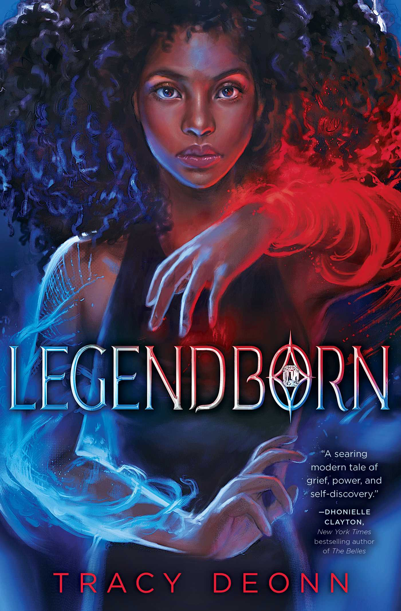
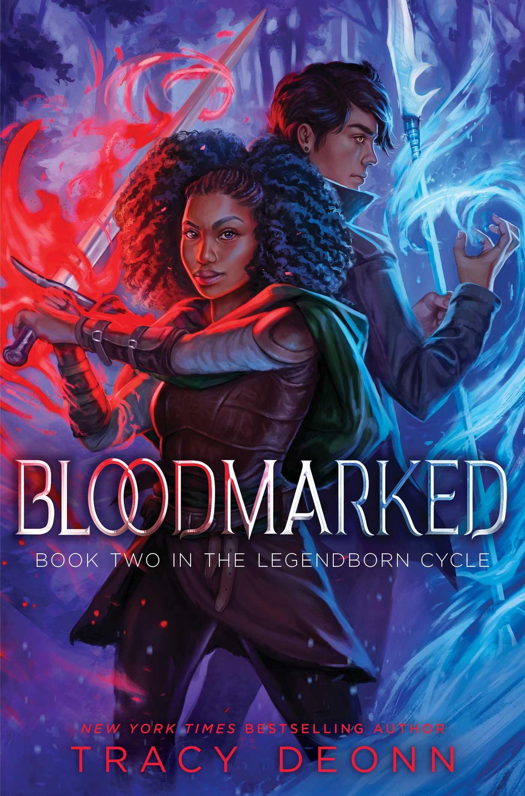
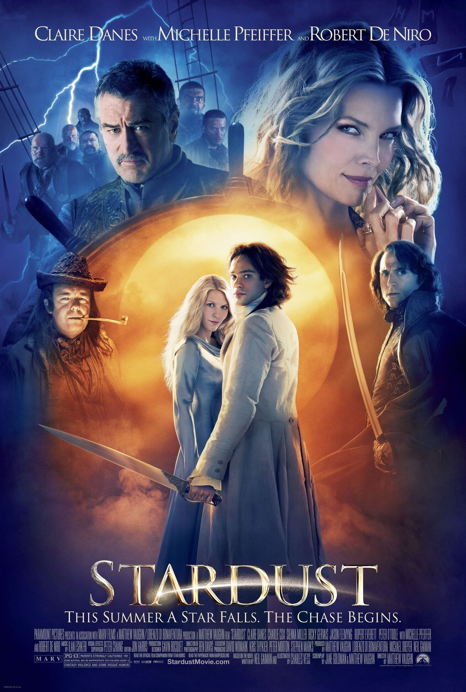
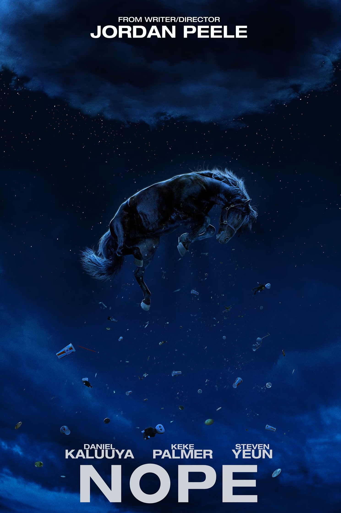

reading + films🎥
books
 I have a huge passion for reading and writing. I have always for comfort in reading and the endless possibilities that come with writing a story. I have been writing stories for as long as I could write and creating stories as long as I could talk.
My favourite book is from a series called 'Legendborn'. It follows our protagonist, Bree Matthews, who is starting at university and is also navigating grief after the death of her mother. Bree discovers a secret society at the University of North Carolina. Bree uncovers hidden truths about her own lineage and abilities, confronting ancient powers and dark forces. It is filled with rich mythology and is a fresh take on Arthurian legend.
There are 2 books in the Legendborn series so far:
- 1. Legendborn
- 2. Bloodmarked
I am also a really big fan of films. Here are my top 3 films:
-

1. Spider-Man: Into the Spider-Verse (2018)
This film is about a teenager called Miles Morales as he becomes the Spiderman as he embraces his newfound powers and teams up with other Spider-People from alternate dimensions to save the multiverse as he becomes the Spider-Man of his reality and teams up with Spider-People from other dimensions to stop a threat to all existence. -

2. Stardust (2007)
This is a fantasy film that follows a young man named Tristan as he ventures into a magical realm to retrieve a fallen star for his beloved, Victoria. He encounters witches, pirates, and other fantastical beings along the way, ultimately discovering love and his own heroic destiny amidst a backdrop of enchantment and adventure. -

3. Nope (2022)
This film is a sci-fi horror that follows a man and his sister who discover something sinister in the skies above their California horse ranch, while the owner of a nearby theme park tries to profit from the mysterious, otherworldly phenomenon. It features some of my favourite actors such as Daniel Kaluuya, Keke Palmer, and Steven Yeun.
I can watch these films a million times over. Here's a clip from my favourite part of of Spider-Man: Into the Spider-Verse. This scene was huge turning point for Miles and was a culmination of all his progress throughout the films so enjoy :).
film watchlist
Add films to the list by clicking the button and delete films from the list by clicking on them
films to watch
films you have watched